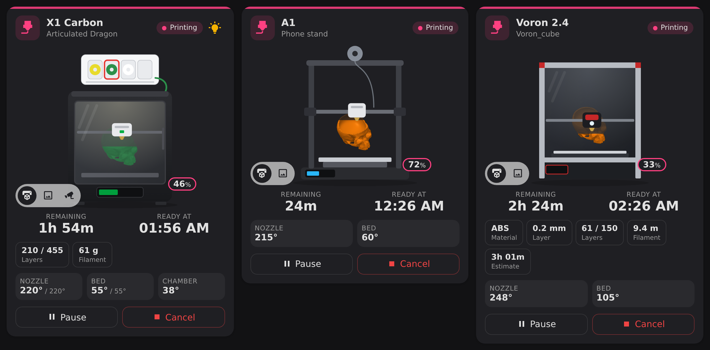
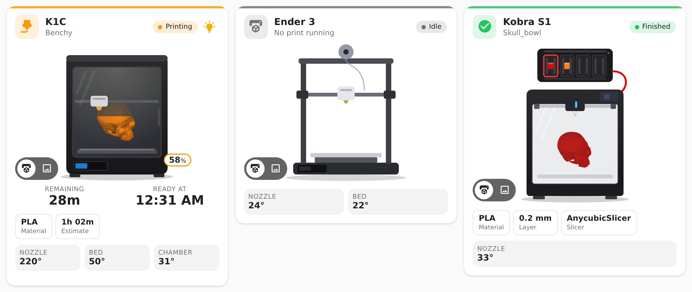

A Home Assistant dashboard card with a drawn printer and your print growing inside it. Live camera, slicer info, AMS spools in their real colours and controls. Bambu Lab, Klipper, Creality, Anycubic and OctoPrint.

Pick any entity of your printer. The card finds the rest by itself, also after you rename entities.
Uses the 3D printer integration you already have.
| Integration | Printers | Drawing |
|---|---|---|
| Bambu Lab | X1, P1S, P1P, P2S, H2D, A1, A1 mini | Enclosed with AMS, or bed slinger for A1 |
| Moonraker | Klipper: Voron, RatRig, Sovol, … | Voron frame, or bed slinger |
| Creality (local) | K1, K1C, K1 Max, K2, Hi, Ender-3 V3 | Creality K1, or bed slinger |
| Creality Cloud | Printers in the Creality Cloud app | Creality K1, plus history and timelapse |
| Anycubic Cloud | Kobra S1, Kobra 2/3, … | Kobra S1 with ACE Pro, or bed slinger |
| OctoPrint | Anything running OctoPrint | Bed slinger |
Follows your Home Assistant theme and language. Built to stay light on wall tablets: it only redraws when your printer changes, and the moving toolhead never repaints the drawing.

https://github.com/Rein033/lovelace-3d-printer-card as Dashboard, then Download.Prefer YAML?
type: custom:printer-3d-card
entity: sensor.x1c_print_status # any entity of the printer
type: custom:printer-3d-group-card
title: Printers